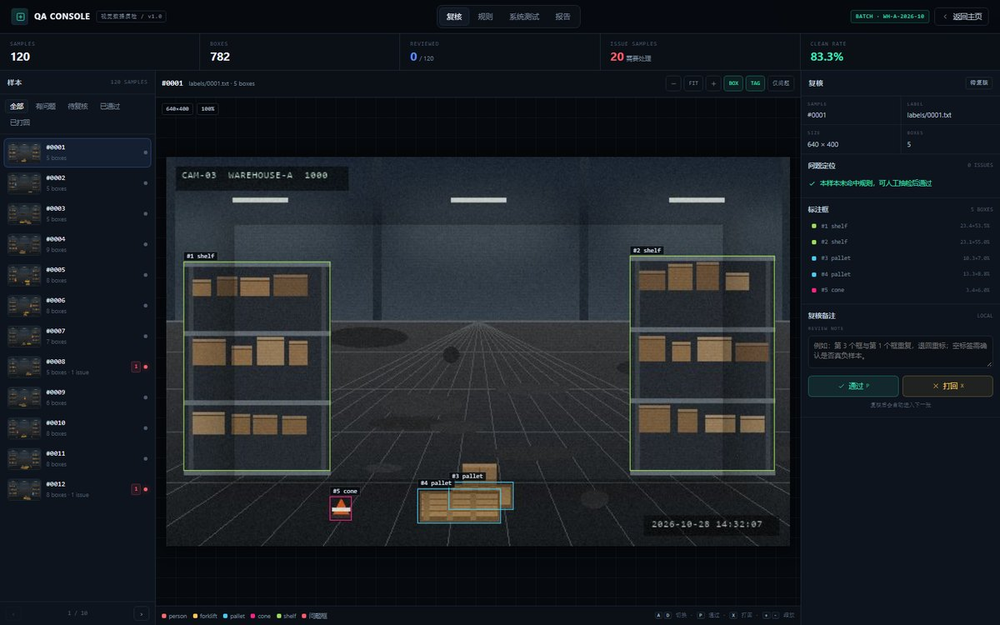
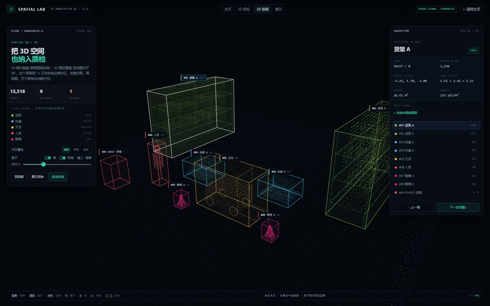
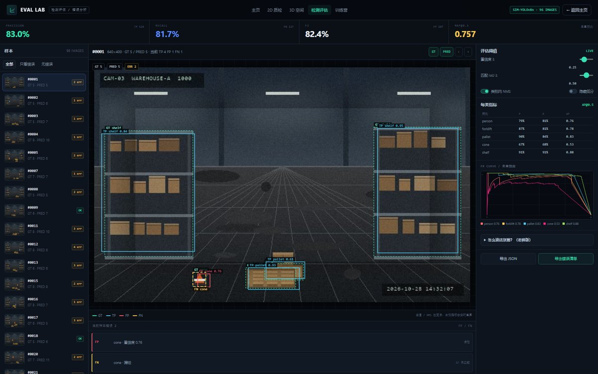

丁佳豪 · 虚拟现实技术应用专科应届。三个可交互作品：2D 标注质检、3D 点云检查、检测评估；外加一个数据审计 CLI。每个数字都能在本地复现。

01 / ANNOTATION QA
02 / 3D SPATIAL
03 / DETECTION EVAL120 张 / 5 类 / 789 框；采集、清洗、标注质检、报告、COCO 导出跑通一条链路。
15,318 点 / 9 个 3D 框；框内点数、体积、密度、空框/稀疏/尺寸异常检查。
96 图 / 641 GT；置信度、IoU、NMS 实时重算，FP/FN 定位到样本。
120 张 / 5 类 / 789 框；YOLO/COCO 双格式；采集→清洗→标注→质检→导出。
8 条规则 + 24 个预置缺陷 24/24 命中；退回单能落到样本/框/规则。
15,318 点 / 9 个 3D 框；空框/稀疏/尺寸异常检查，AABB 先验证。
标注数据里空标签、越界框、零面积、重复框、类别越界混在一起，只靠人眼看既慢又说不清“哪张图、哪个框”。
自建 120 张 / 5 类 / 789 框数据；8 条规则；Canvas 逐样本逐框定位；通过/打回/备注/退回单；Python CLI 并发批处理。
预置 24 个缺陷 24/24 命中，本批 0 误报；120 张批处理 0.33s；JSON/CSV/HTML 报告可直接交付。
2D 框只能看“画面里有没有”，3D 框还要看“空间里对不对”。空框、稀疏框、尺寸异常很难靠肉眼发现。
程序化生成 15,318 点仓库点云 + 9 个 3D 框；计算框内点数/体积/密度/长宽比；点击框/标签/列表联动；自动巡检。
检出 1 个 GHOST 空框；框内点数/密度一键可查；JSON 质检报告可直接复核。
只报一个 mAP，说不清误检/漏检在哪；调阈值、NMS 对指标的影响也讲不清。
GT + 模拟 YOLO 输出；置信度/IoU/NMS 实时重算；TP/FP/FN 可视化；PR 曲线、每类 AP、错误清单。
P 83.0% / R 81.7% / F1 82.4% / mAP@0.5 0.757；能解释阈值/NMS，FP/FN 定位到样本。
Python / Pillow / JSON：生成图、解析 YOLO/COCO、跑审计 CLI。YOLO 归一化，COCO 像素，id 差 1。
HTML 骨架 / CSS 布局 / JS 行为；fetch 数据、Canvas 画框、localStorage 存复核状态。
Three.js：Scene/Camera/Renderer；BufferGeometry + Points 一次 draw call；Raycaster 选框。
页面状态不复杂，原生 JS 足够；少一层框架，打开更快，也不依赖构建工具。
一个 BufferGeometry + 一个 Points，一次 draw call；不逐点建对象，标签用 HTML。
manifest + 分片 + 并发 + 断点续跑 + 版本化；先全量轻规则，再抽样重规则。
点一个红色问题样本，指问题列表：“这是越界/重复框，能定位到第几个框。”
点“自动巡检”，选中 GHOST 空框：“空框为什么只标 REVIEW。”
置信度 0.25→0.60：“P 升 R 降，阈值是业务取舍。”